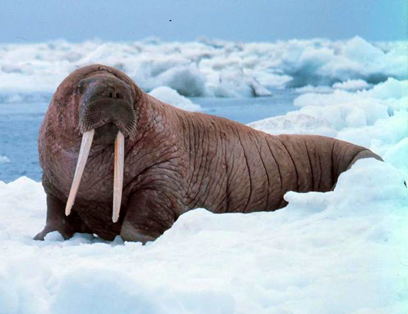

The Walrus (Odobenus rosmarus)
The Walrus is a large flippered marine mammal with a discontinuous distribution about the North Pole in the Arctic Ocean and subarctic seas of the Northern Hemisphere. The walrus is the only living species in the family Odobenidae and genus Odobenus. This species is subdivided into two subspecies:[2] the Atlantic walrus (O. r. rosmarus), which lives in the Atlantic Ocean, and the Pacific walrus (O. r. divergens), which lives in the Pacific Ocean.
Adult walrus are characterised by prominent tusks and whiskers, and their considerable bulk: adult males in the Pacific can weigh more than 2,000 kilograms (4,400 pounds)[3] and, among pinnipeds, are exceeded in size only by the two species of elephant seals.[4] Walruses live mostly in shallow waters above the continental shelves, spending significant amounts of their lives on the sea ice looking for benthic bivalve mollusks to eat. Walruses are relatively long-lived, social animals, and they are considered to be a "keystone species" in the Arctic marine regions.
The walrus has played a prominent role in the cultures of many indigenous Arctic peoples, who have hunted the walrus for its meat, fat, skin, tusks, and bone. During the 19th century and the early 20th century, walruses were widely hunted and killed for their blubber, walrus ivory, and meat. The population of walruses dropped rapidly all around the Arctic region. Their population has rebounded somewhat since then, though the populations of Atlantic and Laptev walruses remain fragmented and at low levels compared with the time before human interference.